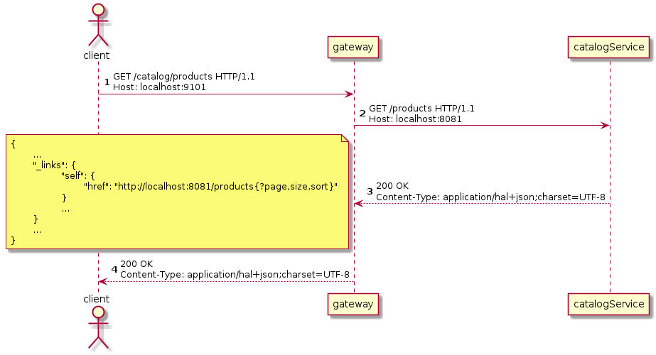

目标
-
理解API Gateway模式
-
使用Spring Cloud Gateway实现API Gateway
-
集成 Spring Cloud Gateway 与 Eureka，自动发现服务并路由
设计
理解API Gateway模式
在微服务架构中，每一个微服务都曝露一组细粒度的通信终点。在此架构下，客户端与微服务之间的通信方式有客户端微服务直接通信和API Gateway模式两种。
客户端与微服务直接通信
在客户端与微服务直接通信模式中，微服务运行在受信任网络中，客户端（如运行在Web浏覧器中的网页脚本、移动设备中的应用等）运行在非受信任网络中。微服务与微服务之间直接通过REST终点通信，客户端与微服务之间也直接通过REST终点通信。所有的微服务都运行在受信任网络中，所以来自微服务的请求都是可信的。但是来自微服务的请求和来自客户端（运行在不受信任网络）的请求共用通信终点，微服务无法区分它们，所以微服务祗能把所有请求都当作不可信请求处理，校验所有请求的认证信息。
在实际生产环境中，微服务实例是不断地被创建和销毁的。所以客户端在和微服务直接通信之前，需要发现服务实例。实际的服务部署应如下图所示，
每个客户端都需先访问服务注册服务，发现服务实例，再与服务实例直接通信。且因服务实例是被不断创建和销毁的，客户端而不时地重新发现服务实例。以运行在Web浏覧器中的页面访问Catalog微服务为例，
-
首先，Web浏覧器先请求服务注册服务，发现Catalog服务实例。
-
服务注册服务访问一个可用的Catalog服务实例信息，包括IP、端口等。
-
然后，Web浏覧器再直接请求Catalog服务实例。
-
Catalog微服务直接响应结果给Web浏覧器。
因为微服务实例是不断被创建和更新，所以Web浏覧器不时地重新发现服务实例（重新发现策略有每次请求前重新发现、一段时间后定时发现、服务实例响应不可用后重新发现等）。
该模式的优点有：
-
客户端与微服务直接通信，没有延迟，没有单点故障。
该模式的缺点有：
-
客户端逻辑复杂，需显式处理服务发现及负载均衡。
-
服务端与客户端网络没有有效隔离，应用需承担更多的安全职责。
API Gateway模式
API Gateway模式在微服务和客户端之间增加一个服务。微服务依旧是运行在受信任的网络中，客户端运行在受信任网络之外。从受信任网络之外不能直接访问任何微服务，客户端仅能访问API Gateway，API Gateway从服务注册处发现微服务，再将请求路由给微服务。
以运行在Web浏覧器中的页面请求Catalog微服务为例，
-
Web 浏覧器发送请求给 API Gateway；
-
API Gateway 请求服务注册服务，发现 Catalog 微服务的实例；
-
服务注册服务响应一个可用的 Catalog 微服务实例；
-
API Gateway 将 Web 浏覧器的请求路由给 Catalog 微服务实例；
-
Catalog 微服务实例处理请求，再将响应发回 API Gateway；
-
API Gateway 将微服务响应返回给Web浏覧器。
该模式优点：
-
统一请求入口，方便进行认证、鍳权、审计等通用处理。
-
向客户端隠藏服务端实现，便于微服务变更。
该模式缺点：
-
增加通信延迟。
-
有单点故障风险。
理解Spring Cloud Gateway
该项目提供了一个用于在Spring MVC之上构建API网关的库。 Spring Cloud Gateway旨在提供一种简单而有效的方法来路由到API，并为它们提供跨领域的关注，例如：安全性，监视/指标和弹性。
https://spring.io/projects/spring-cloud-gateway
Spring Cloud Gateway的主要特性：
-
构建于Spring Framework 5、Project Reactor和Spring Boot 2.0之上
-
能按任意请求属性匹配路由
-
路由特定的断言「predicate」和过泸器「filter」
-
Hystrix Circuit Breaker集成
-
Spring Cloud DiscoveryClient集成
-
容易编写预判「Predicate」和过泸器「Filter」
-
请求速率限制
-
路径重写
Spring Cloud Gateway中三个重要概念：
-
路由「Route」：路由是构建网关的基本单位。其由一个唯一标识、一个目的URI、一组断言「predicate」和一组过泸器「filter」定义。当所有断逼都为真时匹配route。
-
断言「Predicate」：断言是Java 8函数断言「Function Predicate」。其接受类型为Spring Framework
ServerWebExchange的输入。其允许应用开发者匹配HTTP请求的任何部份，例如请求头或请求参数。 -
过泸器「Filter」：这些是使用特定工厂构造的Spring Framework
GatewayFilter实例。 通过它们，可以在发送下游请求之前或之后修改请求和响应。
Spring Cloud Gateway核心工作由路由完成。客户端向网关发送请求，网关检测匹配的路由（当路由中所有断言都为真时匹配），网关再让请求穿过过泸器链，最终发送给目的服务。
请求与路由之间的匹配是通过断言定义的。由于HTTP请求报文的结构特性，应用程序可以高效地解析请求行和请求头，但不能高效解析请求消息体（因其是变长的，且相较与请求报文其它部份体积巨大）。所以路由断言应仅断言请求行及请求头。
Spring Cloud Gateway提供了丰富的断言，应用开发者可以通过断言工厂构造断言，匹配请求行或头的任意部份。
断言实现为Java 8的 java.util.function.Predicate<T>，断言工厂其实就是构造 Predicate<ServerWebExchange> 对象。以 org.springframework.cloud.gateway.handler.predicate.AfterRouteRedicateFactory 为例，其以annoymous内部类的形式定义了兼容 Predicate<ServeWebExchange> 的断言类，并构造其对象实例。
public class AfterRoutePredicateFactory
extends AbstractRoutePredicateFactory<AfterRoutePredicateFactory.Config> {
...
@Override
public Predicate<ServerWebExchange> apply(Config config) {
return new GatewayPredicate() {
@Override
public boolean test(ServerWebExchange serverWebExchange) {
final ZonedDateTime now = ZonedDateTime.now();
return now.isAfter(config.getDatetime());
}
@Override
public String toString() {
return String.format("After: %s", config.getDatetime());
}
};
}
...路由过泸器可以修改进的HTTP请求或出的HTTP响应。过泸器一般仅作用于单个路由，但Spring Cloud Gateway也支持全局过泸器。全局过泸器作用于所有路由。
过泸器的实现与断言类似，路由特定的过泸器实现为兼容接口 org.springframework.cloud.gateway.filter.GatewayFilter 的对象，全局过泸器则是实现接口 org.springframework.cloud.gateway.filter.GlobalFilter 的对象。以路由特性过泸器工厂 org.springframework.cloud.gateway.filter.factory.AddRequestHeaderGatewayFilterFactory 为例，过泸器工厂以annoymous内部类的形式定义兼容类，再构造对象。
public class AddRequestHeaderGatewayFilterFactory extends AbstractNameValueGatewayFilterFactory {
public AddRequestHeaderGatewayFilterFactory() {
}
public GatewayFilter apply(NameValueConfig config) {
return new GatewayFilter() {
public Mono<Void> filter(ServerWebExchange exchange, GatewayFilterChain chain) {
String value = ServerWebExchangeUtils.expand(exchange, config.getValue());
ServerHttpRequest request = exchange.getRequest().mutate().header(config.getName(), value).build();
return chain.filter(exchange.mutate().request(request).build());
}
public String toString() {
return GatewayToStringStyler.filterToStringCreator(AddRequestHeaderGatewayFilterFactory.this).append(config.getName(), config.getValue()).toString();
}
};
}
}全局过泸器以接口 GlobalFilter 的实现类形式实现。以 org.springframework.cloud.gateway.filter.ForwardRoutingFilter 为例，其实现接口 GlobalFilter 且实现方法 Mono<Void> filter(ServerWebExchange exchange, GatewayFilterChain chain)。
public class ForwardRoutingFilter implements GlobalFilter, Ordered {
...
@Override
public int getOrder() {
return Ordered.LOWEST_PRECEDENCE;
}
@Override
public Mono<Void> filter(ServerWebExchange exchange, GatewayFilterChain chain) {
URI requestUrl = exchange.getRequiredAttribute(GATEWAY_REQUEST_URL_ATTR);
String scheme = requestUrl.getScheme();
if (isAlreadyRouted(exchange) || !"forward".equals(scheme)) {
return chain.filter(exchange);
}
// TODO: translate url?
if (log.isTraceEnabled()) {
log.trace("Forwarding to URI: " + requestUrl);
}
return this.getDispatcherHandler().handle(exchange);
}
}理解Cross-Origin Resource Sharing(CORS)
跨来源资源共用（Cross-Origin Resource Sharing (CORS)）是一种使用额外 HTTP 标头令目前浏览网站的使用者代理取得存取其他来源（网域）伺服器特定资源权限的机制。当使用者代理请求一个不是目前文件来源——例如来自于不同网域（domain）、通讯协定（protocol）或通讯埠（port）的资源时，会建立一个跨来源 HTTP 请求（cross-origin HTTP request）。
https://developer.mozilla.org/zh-TW/docs/Web/HTTP/CORS
受「同源政策（Same-Origin policy）」限制，网页中的脚本祗能请求与网页相同网域的HTTP资源。「跨来源资源共用机制提供了Web应用跨网域的存取控制，增加跨网域资料传输的安全性。
CORS以网域、请求方法和请求头三个方面控制跨来源资源共用，其在HTTP请求和响应报文中加入一组扩展头来交换存取控制信息。
| 头 | 作用域 | 值 | 说明 |
|---|---|---|---|
Origin |
CORS请求，CORS预检请求 |
网域 |
指明请求者（网页脚本）的来源网域。 |
Access-Control-Request-Method |
CORS预检请求 |
HTTP请求方法，多个值之间用逗号分隔 |
请求者将要发送的请求方法。 |
Access-Control-Request-Headers |
CORS预检请求 |
HTTP头名穪，多个值之间用逗号分隔 |
请求者将要发送的请求中携带的头。 |
Access-Control-Allow-Origin |
CORS响应，CORS预检响应 |
网域 |
允许与之共用资源的网域。 |
Access-Control-Allow-Credentials |
CORS响应 |
指明当请求的凭证模式「credentials mode」是 |
|
Access-Control-Allow-Methods |
CORS响应，CORS预检响应 |
HTTP请求方法，多个值之间用逗号分隔 |
被允许在CORS请求中使用的HTTP方法。 |
Access-Control-Allow-Headers |
CORS响应，CORS预检响应 |
HTTP头，多个值之间用逗号分隔 |
被允许在CORS请求中使用的HTTP标头。 |
Access-Control-Max-Age |
CORS响应，CORS预检响应 |
秒数 |
|
Access-Control-Expose-Headers |
CORS响应，CORS预检响应 |
HTTP标头，多个值之间用逗号分隔 |
通过列出标题的名称来指示哪些标题可以作为响应的一部分公开。 |
一个典型的CORS请求由CORS预检「CORS-preflight request」和CORS请求两步组成。
-
客户端以
OPTIONS方法向服务端发送CORS预检。CORS预检通过CORS扩展HTTP头向服务端表明预检项。 -
服务端响应CORS预检，以HTTP头形式表明允许的跨来源共用。
对于一些「简单请求（simple requests）」，可以省略CORS预检。一个不触发CORS预检的简单请求需满足以下所有条件：
-
仅允许下列HTTP方法
-
GET -
HEAD -
POST
-
-
仅可包含「CORS安全列表请求标头（CORS-safelisted request-header）」
-
Acccept -
Accept-Language -
Content-Type -
Last-Event-Id -
DPR -
Save-Data -
Viewport-Width -
Width
-
-
仅允许以下
Content-Type标头值：-
application/x-www-form-urlencoded -
multupart/form-data -
text/plain
-
-
没有事件监听器被注册到任何用来发出请求的
XMLHttpRequestUpload物件上。 -
请求中没有
ReadableStream物件被用于上传。
-
简单请求无需CORS预检，可直接发送CORS请求。
-
服务务器在响应中需添加CORS标头。
实现
最简单的创建一个新的 Spring Boot 应用方法是使用 Spring Initializr。使用浏览器访问 https://start.spring.io :
-
Project 选择 Gradle Project，使用 Gradle 构建我们的项目；
-
Language 选择 Java；
-
Spring Boot 撰择 2.2.7 或其它 2.2.x 版本，最新版（讫今为止）的 Spring Cloud Hoxton 兼容 Spring Boot 2.2.x；
-
Project Metadata 部份，Group 填
io.github.rscai.microservices，Artifact 填gateway，Name 填eureka，Packaging 撰 Jar，Java 撰择版本 8； -
Dependencies 选择
-
Gateway
-
Eureka Discovery Client
-
OAuth2 Client
-
单击GENERATE，Spring initializr 就会生成 ZIP 格式的项目文件。
将 gateway.zip 解压后得到一个 Spring Boot 项目。其中：
.
├── .gitignore
├── HELP.md
├── build.gradle
├── gradle
│ └── wrapper
│ ├── gradle-wrapper.jar
│ └── gradle-wrapper.properties
├── gradlew
├── gradlew.bat
├── settings.gradle
└── src
├── main
│ ├── java
│ └── resources
└── test
└── java
└── resources
-
.gitignore, 罗列了应被 GIT 忽略的文件和目录。自动生成及临时文件及目录不应被纳入版本控制； -
build.gradle，Gradle 项目文件，定义了项结构及构建过程； -
gradle/wrapper/包含所有 Gradle Wrapper 相关的文件； -
gradlew是 UNIX-like 平台版本的 Gradle 命令包装； -
gradlew.bat是 Windows 平台版本的 Gradle 命令包装； -
HELP.md顾名思义是帮助文档，与 README 类似； -
setting.gradleGradle 的属性文件； -
src/包含所有源代码和资源文件： -
src/main/包含所有部署至运行环境的源代码文件（以编译后的目标代码形式被部署至运行环境）和资源文件： -
src/main/java/包含所有部署至运行环境的 Java 源代码文件： -
src/main/resources/包含所有部署至运行环境的资源文件； -
src/test包含所有用于测试的源代码和资源文件； -
src/test/java/包含所有用于测试的 Java 源代码文件； -
src/test/resource/包含所有用于测试的资源文件。
将 gateway 项目导入 IntelliJ IDEA。首先，打开 Intellij IDEA，然后，单系 Import Project，选定 eureka 项目目录，再然后选择以 Gradle 项目形式导入。IntelliJ IDEA 会自动初始执行 Gradle 配置，下载 /gradle/wrapper/gradle-wrapper.properties 中指定版本的 Gradle。
构建
本项目使用 Gradle 构建。Gradle 构建过程主要通过 build.gradle 描述。
plugins {
id 'org.springframework.boot' version '2.1.0.RELEASE' (1)
}
apply plugin: 'java'
apply plugin: 'io.spring.dependency-management' (2)
group = 'io.github.rscai.microservices'
version = '0.0.1-SNAPSHOT'
sourceCompatibility = '1.8'
repositories {
mavenCentral()
maven { url 'https://repo.spring.io/milestone' } (3)
}
ext {
set('springCloudVersion', "Greenwich.SR3") (4)
}
dependencies {
implementation 'org.springframework.cloud:spring-cloud-starter-gateway' (5)
implementation 'org.springframework.cloud:spring-cloud-starter-netflix-eureka-client' (6)
testImplementation('org.springframework.boot:spring-boot-starter-test') {
exclude group: 'org.junit.vintage', module: 'junit-vintage-engine'
}
testImplementation 'org.junit.jupiter:junit-jupiter-api'
testRuntimeOnly 'org.junit.jupiter:junit-jupiter-engine'
}
dependencyManagement {
imports {
mavenBom "org.springframework.cloud:spring-cloud-dependencies:${springCloudVersion}" (7)
}
}
test {
useJUnitPlatform()
}
bootRun {
String springProfilesActive = System.properties['spring.profiles.active'] (8)
systemProperty "spring.profiles.active", springProfilesActive
}| 1 | 引入Spring Boot的Gradle插件 org.springframework.boot。 |
| 2 | 引入Spring依赖插件 io.spring.dependency-management。 |
| 3 | 添加Spring里程碑仓库，以便引用里程碑版本库。 |
| 4 | 将Spring Cloud版本提取出来设置为变量，从而统一控制Spring Cloud库的版本。 |
| 5 | 引入 spring-cloud-starter-gateway 至 implementation 范围依赖。spring-cloud-starter-gateway 引用了Spring Cloud Gateway所有依赖的库，引用 spring-cloud-starter-gateway 就等同于将所有Spring Cloud Gateway依赖库。 |
| 6 | 引入 spring-cloud-starter-netflix-eureka-client 至 implementation 范围依赖。Spring Cloud Gateway支持从Eureka发现服务并通过Eureka维护的微服务元数据自动配置路由。Spring Cloud Gateway依赖Eureka DiscoveryClient实现与Eureka的集成。 |
| 7 | 通过Gradle的dependencyManagement功能统一管理Spring Cloud库的版本。 |
| 8 | 将Gradle接受到的 spring.profiles.active 系统属性传递给任务 bootRun。通过Gradle运行Spring Boot应用时，就可以以系统属性的方式指定profile了。
|
配置
Spring Cloud Gateway的自动配置是通过配置属性 spring.cloud.gateway.enabled 及类 org.springframework.web.reactive.DispatchHandler 激活的，且 spring.cloud.gateway.enabled 缺省值为 true ，DispatchHandler 则被包含在 spring-cloud-starter-gateway` 阊接引用的 spring-webflux 中，所以引入 spring-cloud-starter-gateway 就会激活自动配置，无需使用特定的注解。
@Configuration
@ConditionalOnProperty(name = "spring.cloud.gateway.enabled", matchIfMissing = true) (1)
@EnableConfigurationProperties
@AutoConfigureBefore({ HttpHandlerAutoConfiguration.class,
WebFluxAutoConfiguration.class })
@AutoConfigureAfter({ GatewayLoadBalancerClientAutoConfiguration.class,
GatewayClassPathWarningAutoConfiguration.class })
@ConditionalOnClass(DispatcherHandler.class) (2)
public class GatewayAutoConfiguration {
...| 1 | 当属性 spring.cloud.gateway.enabled 被设置为 true 时或缺失时，激活自动配置（需结合其它条件）。 |
| 2 | 当类 org.springframework.web.reactive.DispatchHandler 出现在classpath时，激活自动配置。Spring Cloud Gateway是构建于Spring WebFlux（Spring的Reactive Web MVC框架）之上的，Spring Cloud Gateway以 DispatchHandler 为指标，当Spring WebFlux存在于classpath时才配置自身。 |
再然后，通过应用配置文件配置Eureka集成和CORS。
server:
port: 9101 (1)
spring:
application:
name: gateway (2)
cloud:
compatibility-verifier:
enabled: true
gateway:
discovery:
locator:
enabled: true (3)
lowerCaseServiceId: true
forwarded:
enabled: true (4)
x-forwarded:
enabled: true
forEnabled: true
portEnabled: true
prefixEnabled: true
globalcors: (5)
corsConfigurations:
'[/**]':
allowedOrigins: '*'
allowedHeaders: '*'
allowedMethods: '*'
eureka:
client:
serviceUrl:
defaultZone: http://localhost:9001/eureka/ (6)| 1 | 设置网关监听的端口。 | ||||||||||||
| 2 | 设置应用名穪。 | ||||||||||||
| 3 | 设置属性 spring.cloud.gateway.discovery.locator.enabled 为 true 将激活配置Bean org.springframework.cloud.gateway.discovery.DiscoveryClientRouteDefinitionLocator。
GatewayDiscoveryClientAutoConfiguration.java
GatewayDiscoveryClientAutoConfiguration.java
|
||||||||||||
| 4 | 设置属性 spring.cloud.gateway.forwarded.enabled 为 true （缺省值为 true ）激活 org.springframework.cloud.gateway.filter.headers.ForwardedHeadersFilter 配置。ForwardedHeadersFilter 将请求中的所有头都分发给目的微服务。
GatewayAutoConfiguration.java
|
||||||||||||
| 5 | 设置属性 spring.cloud.gateway.x-forwarded.enabled 为 true （缺省值为 true ）激活 org.springframework.cloud.gateway.filter.XForwardedHeadersFilter 配置。XForwardedHeadersFilter 将在将请求分发给目的微服务之前向其中添加 X-Forward-* 标头。
GatewayAutoConfiguration.java
还得我们的目的微服务是Hypermedia-Driven RESTFul Web服务，其会在响应体中带上绝对路径的资源URL。但是目的微服务的根上下文跟网关的根上下不同，网关是重写了请求路径才匹配目的微服务的URL路径的。以请求所有Catalog Product为例，

|
||||||||||||
| 6 | 配置CORS。在API Gateway模式下，所有请求和响应都经过网关。所以在网关处处理CORS是最合理的。
|
运行
最后，在命令行中执行：
./gradlew bootRun -Dspring.profiles.active=dev网关就会监听在端口 9101，可以通过URL http://localhost:9101/<serviceId>; 访问所有注册在Eureka的微服务了。
总结
本章我们使用Spring Cloud Gateway构建API Gateway，并集成Eureka，使其可以自动从Eureka中发现微服务并路由请求给微服务。我们在网关中配置CORS，使网关代理的所有资源都可以被跨来源共用。